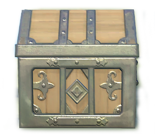
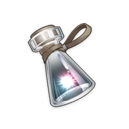

官方音乐专辑
— 张原神官方原声专辑 · 已同步至7.1版本 · 仅展示网易云/B站可直接核实的公开曲目
素材来源：原神官方互动地图 / enka.network · 仅作可视化展示
指标口径 · 热度依据（请先阅读）
✓ 已核实的三项指标
- 网易云单曲红心/收藏数（2026-11-07 CDP 接管桌面客户端 UI 逐首实测，播放时校验 songId 一致才采信）
- 网易云单曲评论总数（逐首接口实测，2026-11-04 桌面客户端登录态复采，1712 首，0 失败）
- B站「原神+曲名」相关视频播放量（逐首搜索匹配最相关视频的真实播放数，2026-10）
- 综合热度分（0–100）=
log10(1+红心)/6×0.3 + log10(1+评论)/5×0.3 + log10(1+播放)/7×0.4，红心按客户端标签下限值计，缺失项按可用权重重新归一
♥ 红心数粒度说明（客户端原始显示，未做估算）
网易云已从公开 API + 网页端下架单曲收藏总数接口，仅桌面客户端 UI 仍显示。本站通过 CDP 自动化逐首播放并读取客户端迷你播放条数值：<1000 显示精确数字（如 687），≥1000 显示客户端标签 999+ / 1w+ / 10w+ / 100w+。页面展示一律使用客户端原始显示值；排序与热度加权仅取其区间下限。少量曲目（61/1712）因客户端搜索结果无法确认到同一首歌，红心数诚实留空。
采集时间：2026-11-07 · 爬虫脚本
采集时间：2026-11-07 · 爬虫脚本
tools/crawl_nc_fav.py · 原始记录 tools/tracks_fav.jsonl
角色主题 OST 与官方 PV 的对应：《闪耀的群星 The Stellar Moments》Vol.1–6 属于角色主题 OST，每首曲目对应该角色的角色演示 / 角色PV / 角色预告，曲名与 PV 名并不相同（例如演示「听书人」的曲目是《尘世闲游 Rex Incognito》）。对应关系与 BV 号可在 角色音乐 页查看，单角色的完整曲目与 PV 对照见角色详情页。
核心结论
以下结论全部由当前实测数据动态计算；跨平台指标不可相加或换算。
专辑曲目指标 TOP（实测快照）
各榜单按对应指标的有效样本排序；真实 0 与缺失分别处理。点击行可展开所属专辑的完整曲目详情。

— 张官方原声专辑点击任意专辑卡片展开完整曲目详情（每首均附平台直达链接）；氛围BGM 或平台搜索不唯一的专辑只保留元数据，宁空勿假。
数据来源 · 采集时间
专辑信息 · 曲目列表网易云 music.163.com（专辑公开元数据）
网易云红心/收藏数CDP 接管桌面客户端 UI 逐首实测 · 2026-11-07
网易云评论数桌面客户端登录态 · 2026-11-04 全量复采 1712 首
B站相关视频播放量搜索匹配最相关视频 · 2026-10
用户核对方式每首曲目附

直达按钮© 米哈游版权所有 · 本项目仅供个人学习与非商业用途 · 游戏素材来源：原神官方互动地图 / enka.network